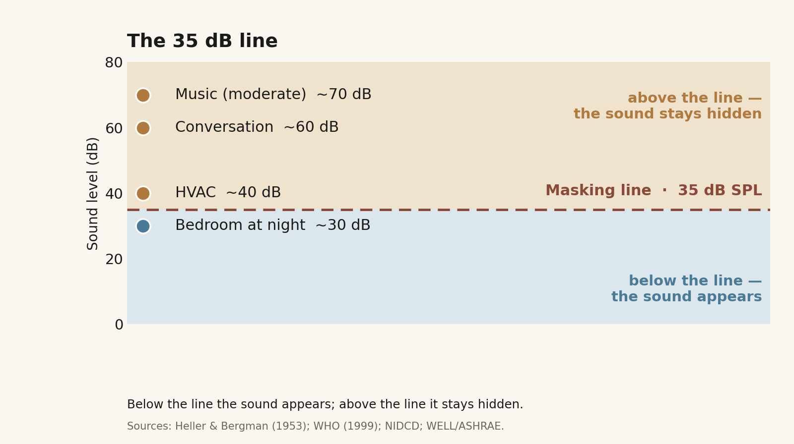
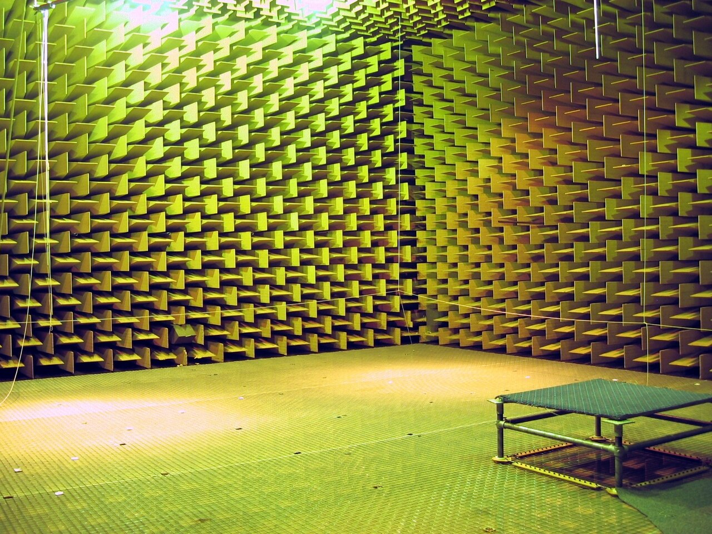

The story I hear again and again
In my clinic, I hear the same story again and again. At night, when the lights are off and they lie down, a sound appears. A high pitched ringing. A hissing. Sometimes it is in both ears. Sometimes it starts in one ear and moves to the other.
They describe it the way you would describe a sound you have never heard before. Like static from an old radio or television. Like a dog whistle. Like a high bell that never fades. And they all say the same thing about when it comes: when it is quiet. Just before sleep. When they are lying still, doing nothing. When they are reading quietly.
The first thing most of them say is: “What is this sound?” At first, they ignore it. Then it starts to bother them. And then they start to worry — is something wrong with my health? Is something wrong with my mind? Is something wrong with my ears? It is a fair question. And it has one promising hypothesis — one that researchers began testing more than seventy years ago, in a soundproof room.
The sound was always there
In 1953, two researchers, Morris Heller and Moe Bergman, put 80 adults with normal hearing into a soundproof room, one at a time, and asked them what they heard. Ninety-four percent of them heard something — a buzzing, a ringing, a humming. None of them had reported tinnitus before they walked in.
Their conclusion was simple, and it still holds: the sound is always there. Everyday noise just covers it up. Ordinary quiet living conditions usually run above 35 dB SPL, and that is enough to mask it. A bedroom at night, at about 30 dBA, sits below that line. That is why the sound shows up at bedtime, and not at breakfast.

The result has been repeated since. In one study, 64 percent of 120 young adults with normal hearing heard a sound after twenty minutes in a sound booth, most of them within four minutes. In an anechoic chamber, 83 percent heard at least one sound within four minutes.
It is worth saying plainly: the sound does not get louder at night. It gets more noticeable. The room gets quieter, so the contrast grows. That is the whole trick.
The quietest rooms on Earth
Take away even more sound, and the effect grows. In Redmond, Washington, Microsoft built a room where the background noise measures -20 dBA — twenty decibels below the threshold of hearing (0 dB SPL) — and it set the Guinness record for the quietest place on Earth in 2015. People who go inside do not hear silence. They hear their own heartbeat. Their breathing. Blood moving through the arteries near their ears. The creak of a joint when they move an arm. The room takes away the outside world, and the ear turns inward — to sounds that were always there, just buried under everything else.

In Minneapolis, there is an older room. Steven Orfield bought it cheaply — it was built in the 1960s for the appliance maker Sunbeam in Chicago — and had it trucked to Minnesota, where it sat in storage for eight years. In 2004 it set the Guinness record at -9.4 dBA. Microsoft took the record in 2015. Orfield took it back in 2021, at -24.9 dBA.
You have probably heard that no one can last more than 45 minutes inside. That number comes from a 2012 tabloid headline, and Orfield himself says the quote about going mad was made up. What he actually does is make journalists sit in the dark for 45 minutes before he will talk to them. The real record belongs to a New York Times writer, Caity Weaver, who spent three hours in the chamber and came out feeling as if she had been to a spa.
What actually happens in there is quieter than the myth, and stranger. After half an hour, Orfield — who has a mechanical heart valve — can hear it ticking, loud. After fifteen minutes, Weaver saw flashes of light in the dark. And in the silence, the brain starts to supply sound of its own — a faint ringing that grows into a steady tone, the same kind of sound the brain makes in tinnitus.
An ear built to notice almost nothing
Your ear is not just sensitive to faint sounds. It is sensitive to tiny differences between sounds. It can tell two sounds apart when one reaches your ears just seven millionths of a second before the other — about one six-thousandth of a single film frame — and that is how it knows where a sound is coming from. It can tell two tones apart that differ by only about 3 hertz — at 1,000 hertz, a change of just 0.3 percent. (Musicians’ ears are measurably sharper still — four to five times better at telling frequencies apart.) And it can tell two sounds apart when one is only about 1 to 2 dB SPL louder than the other.
So when something sounds off — a track that is a little late, a note that is a little flat, a voice that is a little too quiet — that is not you being picky. That is your ear noticing a difference it was built to catch.
The takeaway
The quietest sound you will ever hear is the one your own ear makes. It is not a sign that something is broken. It is what a healthy ear does when the world goes quiet.